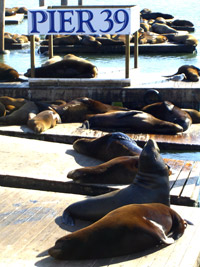

California Sea Lions have been always present in San Francisco Bay.
 While the cable cars are used to a certain extent by commuters, their small service area and premium fares for single rides make them more of a tourist attraction. They are among the most significant tourist sites in the city, along with Alcatraz Island and Fisherman's Wharf.
They started to haul out on docks of Pier 39 in September 1989. Before that they mostly used Seal Rock for that purpose. Ever since September 1989 the number of sea lions on Seal Rock has been steadily decreasing, while their number on Pier 39 has generally increased.
Some people speculate that sea lions moved to docks because of the 1989 Loma Prieta earthquake, but the earthquake occurred months after the first sea lions had arrived at Pier 39.
It is likely that the sea lions feel safer inside the Bay.